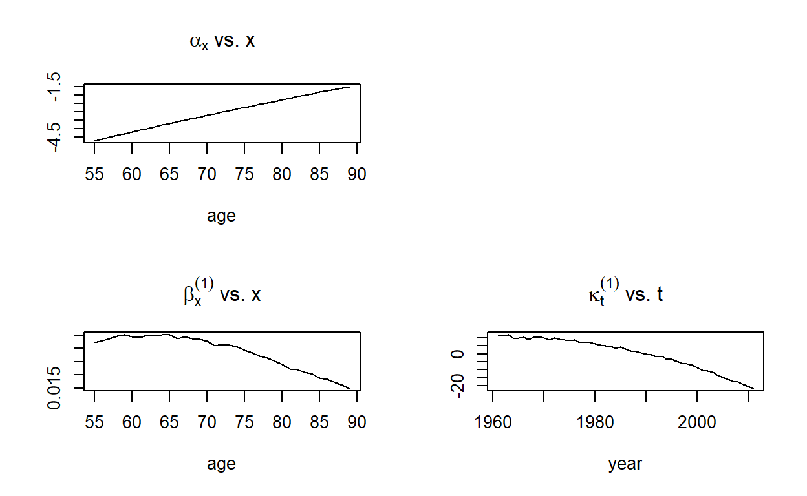
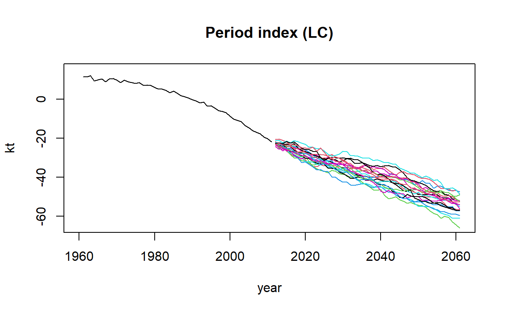
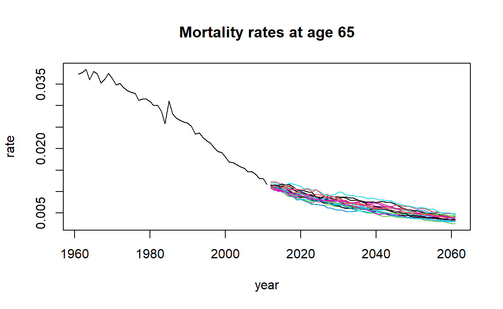

In this tutorial we aim to illustrate the practical implementation of stochastic mortality models in R using the package StMoMo. This tutorial will focus on the modelling of mortality rates for males in England and Wales, but the techniques shown can be easily extended to other countries.
StMoMo (Villegas, Kaishev, and Millossovich 2018) is a package implementing stochastic mortality models belonging to the class of Generalised Age-Period-Cohort model and provides tools for fitting stochastic mortality models, assessing their goodness of fit and performing mortality projections. Note that this package has been loaded in the current R workspace. Therefore you can utilise the capacities of the package without explicitly loading it.
However, if you are using this package outside this tutorial remember to first install the package with the code:
install.packages("StMoMo", dependencies = TRUE)And then load it with the instruction
library("StMoMo")The object EWMaleData included in the package StMoMo contains data on deaths and central exposures for England and Wales males for the period 1961-2011 and for ages 0-100 obtained from the Human Mortality Database (http://www.mortality.org/):
EWMaleData## Mortality data for England and Wales
## Series: male
## Years: 1961 - 2011
## Ages: 0 - 100
## Exposure: centralWe can do a plot of the evolution mortality at some sample ages with the following code:
mxt <- EWMaleData$Dxt /EWMaleData$ Ext
xplot <- c("30", "40", "50", "60", "70", "80")
matplot(EWMaleData$years, t(mxt[xplot,]), type = "l", log = "y", lty = 1, ylab = "mxt")
text(1963, mxt[xplot, "1985"], labels = xplot)From this graph we see that mortality in England and Wales has improved considerably over the past 50 years. We can get a quick quantification of this mortality improvement as follows:
#Reduction factors
rx <- (mxt[, "2011"]/mxt[, "1961"])^(1/(2011-1961))
#Compute Improvement rates and smooth
ix <- 1 - rx
ix_smooth <- fitted(smooth.spline(EWMaleData$ages, ix))
#Plot results
plot(EWMaleData$ages, ix, type = "l", main = "Improvement rates in EW 1961-2011")
lines(EWMaleData$ages, ix_smooth, col = "blue", lwd = 2)Calculate and present the mortality improvement rates in EW from 1990 to 2011 for the ages 20, 40, 60, 80, and 100.
# import the data
mxt <- EWMaleData$Dxt /EWMaleData$ Ext
xplot <- c("20", "40", "60", "80", "100")
# reduction factors
rx <- (mxt[, "2011"]/mxt[, "1990"])^(1/(2011-1990))
# compute Improvement rates
ix <- 1 - rx
# plot results
plot(EWMaleData$ages, ix, type = "l", main = "Improvement rates in EW 1990-2011")# import the data
mxt <- EWMaleData$Dxt /EWMaleData$ Ext
xplot <- c("20", "40", "60", "80", "100")
# reduction factors
rx <- (mxt[, "2011"]/mxt[, "1990"])^(1/(2011-1990))
# compute Improvement rates
ix <- 1 - rx
# plot results
plot(EWMaleData$ages, ix, type = "l", main = "Improvement rates in EW 1990-2010")In order to illustrate the creation of stochastic mortality mortality models and other capabilities of StMoMo, we will consider the models summarised in the table below
| Model | Predictor (\(\eta_{xt}\)) |
|---|---|
| LC | \(\alpha_x + \beta^{(1)}_x \kappa^{(1)}_t\) |
| CBD | \(\kappa_t^{(1)} + (x-\bar{x})\kappa_t^{(2)}\) |
| APC | \(\alpha_x + \kappa^{(1)}_t+ \gamma_{t-x}\) |
| M7 | \(\kappa_t^{(1)} + (x-\bar{x})\kappa_t^{(2)} + \left((x-\bar{x})^2-\hat{\sigma}_x^2\right)\kappa_t^{(3)} + \gamma_{t-x}\) |
In this table, LC stands for the Lee-Carter model; CBD for the Cairns-Blake-Dowd model; APC for the classical Age-Period-Cohort model; and M7 for the quadratic CBD with cohort effects.
For consistency, we will consider all the models under a log-Poisson setting (however, in StMoMo we could easily use a logit-binomial setting focusing on one-year death probabilities).
\[D_{xt}\sim \mathrm{Poisson}(E^c_{xt}\mu_{xt})\] \[\log \mu_{xt}=\eta_{xt}\]
StMoMo has predefined functions for defining these four stochastic mortality. We can thus create these models with the following commands:
LC <- lc()
CBD <- cbd(link = "log")
APC <- apc()
M7 <- m7(link = "log")Each of the objects will have an abstract representation of the corresponding stochastic mortality model:
LC ## Poisson model with predictor: log m[x,t] = a[x] + b1[x] k1[t]CBD## Poisson model with predictor: log m[x,t] = k1[t] + f2[x] k2[t]APC## Poisson model with predictor: log m[x,t] = a[x] + k1[t] + g[t-x]M7 ## Poisson model with predictor: log m[x,t] = k1[t] + f2[x] k2[t] + f3[x] k3[t] + g[t-x]Exercise
In StMoMo the fitting of stochastic mortality models to data is carried out with the function fit.
In our examples, we will concentrate on ages 55 to 89 as the CBD model and the M7 model have been particularly designed to fit higher ages. Models LC, APC, CBD and M7 can be fitted to England and Wales male mortality data for ages 55 to 89 using the code:
#Ages for fitting
ages.fit <- 55:89
#Fit models
LCfit <- fit(LC, data = EWMaleData, ages.fit = ages.fit)
APCfit <- fit(APC, data = EWMaleData, ages.fit = ages.fit)
CBDfit <- fit(CBD, data = EWMaleData, ages.fit = ages.fit)
M7fit <- fit(M7, data = EWMaleData, ages.fit = ages.fit)We can then plot the parameter estimates as follows:
plot(LCfit)
plot(CBDfit, parametricbx = FALSE) plot(M7fit, parametricbx = FALSE)Present the parameter estimates of the APC model.
APC <- apc()
ages.fit <- 55:89
APCfit <- fit(APC, data = EWMaleData, ages.fit = ages.fit)plot(APCfit, parametricbx = FALSE)Exercise
The goodness-of-fit of the mortality models can be analysed by inspecting the residuals of the fitted models. In StMoMo, these residuals can be computed with the function residuals:
LCres <- residuals(LCfit)
CBDres <- residuals(CBDfit)
APCres <- residuals(APCfit)
M7res <- residuals(M7fit)Graphs of these residuals can be produced using the generic function plot. For instance, heat maps of the residuals can be produced with the commands (Sign plots can also be produce if we set type = "signplot"):
plot(LCres, type = "colourmap", reslim = c(-3.5, 3.5))plot(CBDres, type = "colourmap", reslim = c(-3.5, 3.5))plot(APCres, type = "colourmap", reslim = c(-3.5, 3.5))Similarly, scatter plots of the residuals can be produced with the commands:
plot(CBDres, type = "scatter", reslim = c(-3.5,3.5))Exercise Present the heat map and scatter plots of residuals for the M7 model.
M7 <- m7(link = "log")
ages.fit <- 55:89
M7fit <- fit(M7, data = EWMaleData, ages.fit = ages.fit)
M7res <- residuals(M7fit)# heat map
# scatter plot# heat map
plot(M7res, type = "colourmap", reslim = c(-3.5, 3.5))
# scatter plot
plot(M7res, type = "scatter", reslim = c(-3.5,3.5))Exercise
Once we have fitted the stochastic mortality model, we can project it forward to obtain forecast of mortality rates. In StMoMo this is accomplished with the function forecast. This function assumes that the period indexes follow a multivariate random walk with drift:
\[\boldsymbol{\kappa}_t = \boldsymbol{\delta} + \boldsymbol{\kappa}_{t-1} + \boldsymbol{\xi}_t^\kappa, \qquad \boldsymbol{\kappa}_t = \left(\! \begin{array}{c} \kappa_t^{(1)} \\ \vdots\\ \kappa_t^{(N)} \end{array} \!\right), \qquad \boldsymbol{\xi}_t^\kappa\sim N(\mathbf{0},\Sigma),\]
and that the cohort effects can be modelled with an ARIMA\((p,q,d)\) with drift:
\[\Delta^d\gamma_c = \delta_0 + \phi_1\Delta^d\gamma_{c-1} +\cdots+ \phi_p\Delta^d\gamma_{c-p}+\epsilon_{c}+\delta_1\epsilon_{c-1}+\cdots+\delta_q\epsilon_{c-q}\]
50-year ahead (\(h = 50\)) central projections of the period indexes, cohort index, and mortality rates for the England and Wales mortality experience using the LC, CBD and APC model can be obtained with the code:
LCfor <- forecast(LCfit, h=50)
CBDfor <- forecast(CBDfit, h=50)
APCfor <- forecast(APCfit, h=50, gc.order = c(1,1,0))Note that here we have a assumed for the APC model that the cohort effect,\(\gamma_{t-x}\), follows ARIMA\((1,1,0)\) with drift
We can then produce plots of the forecast of the period and cohort indexes with function plot:
plot(LCfor, only.kt = TRUE)plot(CBDfor, parametricbx = FALSE)plot(APCfor, parametricbx = FALSE)The projected values of the mortality rates will be in the attribute $rates of each of the forecasted models. Then, for instance, the mortality rate at age 65 in year 2030 produced by each of the models can be accessed as follows:
LCfor$rates["65", "2030"]## [1] 0.007538405CBDfor$rates["65", "2030"]## [1] 0.008371284APCfor$rates["65", "2030"]## [1] 0.01008552We can use these to produce a graph of the projected mortality rates. For example, projected rates from the APC model at sample ages can be produced as follows:
xplot <- c("60", "70", "80")
matplot(EWMaleData$years, t(mxt[xplot,]), type = "l", log = "y", lty = 1,
main = "EW Projected rates from APC", ylab = "mxt",
xlim = c(1960, 2060), ylim = c(0.001, 0.2))
matlines(APCfor$years, t(APCfor$rates[xplot,] ), lty = 2)
text(1963, mxt[xplot, "1985"], labels = xplot)Package StMoMo also provides the function simulate for simulating trajectories from stochastic mortality models. For example, the code below produces 500 simulated trajectories for the next 50 years of the four stochastic mortality models fitted previously to the England and Wales male mortality experience:
LCsim <- simulate(LCfit, nsim = 500, h = 50)
CBDsim <- simulate(CBDfit, nsim = 500, h = 50)
APCsim <- simulate(APCfit, nsim = 500, h = 50, gc.order=c(1, 1, 0))
M7sim <- simulate(M7fit, nsim = 500, h = 50, gc.order=c(2, 0, 0))The output from this simulation can be used to extract sample trajectories from a model. For instance, 20 trajectories of the period index of of the LC can be plotted as follows:
#Plot period index trajectories for the LC model
plot(LCfit$years, LCfit$kt[1, ],
xlim = c(1960, 2061), ylim = c(-65, 15),
type = "l", xlab = "year", ylab = "kt",
main = "Period index (LC)")
matlines(LCsim$kt.s$years, LCsim$kt.s$sim[1,,1:20],
type = "l", lty = 1)
We can also obtain sample trajectories of the force of mortality at age 65 produced by the LC model as follows:
plot(LCfit$years, mxt["65", ], xlim = range(LCfit$years, LCsim$years),
ylim = range(mxt["65", ], LCsim$rates["65", , 1:20]), type = "l",
xlab = "year", ylab = "rate", main = "Mortality rates at age 65")
matlines(LCsim$years, LCsim$rates["65", , 1:20], type = "l", lty = 1)
Finally, we can use the output to produce a fanchart depicting the uncertainty in the projection of the mortality at age 65 produced by the LC model:
library(fanplot)
plot(LCfit$years, mxt["65",], xlim = c(1960, 2061),
ylim = c(0.0025, 0.05), pch = 20, log = "y",
xlab = "year", ylab = "m(65,t) (log scale)")
fan(t(LCsim$rates["65",,]), start = 2012,
probs = c(2.5, 10, 25, 50, 75, 90, 97.5), n.fan=4, ln=NULL,
fan.col = colorRampPalette(c("black", "white")))Note that in the above graph the mortality rates are shown in a log-scale and that the different shades in the projection represent 95%, 80% and 50% prediction intervals.
Forecast the mortality rate of the M7 model over 50 years and print the forecasted mortality rate at age 60 in year 2020. Assume that the cohort indexes of the M7 follow an ARIMA\((2,0,0)\) with non-zero intercept
M7 <- m7(link = "log")
ages.fit <- 55:89
M7fit <- fit(M7, data = EWMaleData, ages.fit = ages.fit)
M7res <- residuals(M7fit)# forecast
# plot the forecast
# print the required rate# forecast
M7for <- forecast(M7fit, h=50, gc.order = c(2,0,0))
# plot the forecast
plot(M7for, parametricbx = FALSE)
# print the required rate
M7for$rates["60", "2020"]Villegas, Andrs M., Vladimir K. Kaishev, and Pietro Millossovich. 2018. StMoMo: An R Package for Stochastic Mortality Modeling. Journal of Statistical Software 84 (3): 138. doi:10.18637/jss.v084.i03.